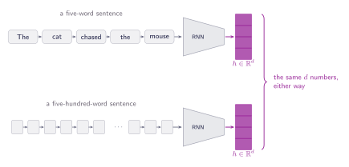
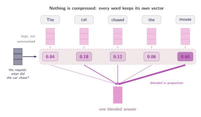

01 · Queries, Keys, and Values
Why Attention?
The fixed-vector bottleneck, and the idea of letting a model look things up instead of memorising.
One vector for the whole sentence
Consider a model that reads a sentence and has to answer a question about it. Before attention, the standard recipe was a recurrent network that walks the sentence one word at a time, carrying a single hidden state that it updates at every step. By the time the model reaches the full stop, everything it knows about the sentence has to fit inside that one vector. It is the same size whether the sentence has five words or five hundred.

Why not make the vector bigger?
The obvious response is to give the model more room. In other words, increase the length of the vector so we have more space for the sentence to live in. This indeed works quite well, and it was a real part of how RNNs could be improved considerably. But as you might have already guessed, this has a limit. The recurrent weight matrix is $d \times d$, so doubling the state size quadruples the parameters in that block, and a larger state is slower to train and easier to overfit.
Let's assume for a moment something absurd, especially right now: RAM prices are actually cheap and we can increase those vector sizes as much as we want. Sadly, of course, that's nowhere close to the current reality (maybe if you're reading from the future, RAM prices are now cheaper, yay!!). Continuing, the problem doesn't go away, because it was never only about size.
The cat chased the mouse because it was hungry. When asked what the cat chased, the model needs one thing. When asked who was hungry, the model needs another. The recurrent network has to write its summary before it's even aware of the question. That is, the vector we computed above (cute purple blocks) is computed before any question is asked. In more formal terms, the compression happens too early, and no amount of room or RAM actually fixes that.
Let's now go through another supposition. Say we refuse to compress at all, that is, we keep one vector per word, which yields five of them for the short sentence we're using as an example "(1) The (2) cat (3) chased (4) the (5) mouse". And suppose as well that we let the model come back and read them whenever it needs something, like the cheat sheet we can bring to exams. When it needs to know who was hungry, it puts out a request; every word reports how well it answers that request. And their contributions are blended in proportion to how well they answered. In this assumption, nothing has to be decided in advance, because in some ways nothing was thrown away.

What that buys, and what it hides
Look back at the complaint we started with. There is no longer a single state that has to be the same size for five words and five hundred, because there's not single state at all. The sentence stays where it is, and the model reads it whenever it has a reason to. We have not made the cost disappear, though. We have move it, now the model looks over every word each time it asks for something, and that will of course yield a cost.
Look at the figure again. It shows three things as if we've already figured out how to build them. An initial request comes in from the left, but we aren't told where it originates or what it contains. Then, each word generates a score without any clear rule explaining how. The final step (using those scores to blend the words together) is the only part we can actually execute right now, as it is simply a weighted sum. Ultimately, two of these three steps are still just conceptual.
Three words in that description were carrying all the weight:
- The request. The model works with vectors, not questions, so it is not even clear what a request is made of.
- The reply. Every word hands something back when a request arrives, and we never said what that something is.
- The score. Some rule has to decide how well a reply answers a request, and we have not written that rule down.
None of this is new. What we have been describing, in a circular way, is something programmers have used a few times. A lookup in a key-value store. That is where the next section starts and it hands us all three definitions at once.